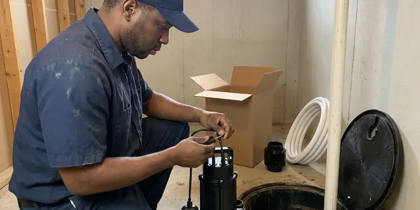

Tankless Water Heater Installation in Germantown, MD
Running out of hot water mid-shower? BVL Plumbing installs tankless heaters in Germantown, MD sized for how your house actually uses water.
- Permits Pulled
- Venting to Spec
- Condensing Units
- Isolation Valves Included

Ready for Tankless in Germantown, MD?
Permit, gas piping, venting and inspection are all on us.
Tankless Water Heaters Sized for Your Germantown, MD Home
BVL Plumbing sizes and installs on-demand heaters that make hot water only while a tap is open. We calculate peak flow in gallons per minute, check your incoming water temperature and confirm your gas supply can carry up to 199,000 BTU. Then the install begins. Unit, venting and service valves all go in to the maker's specs, and the gas line gets a pressure test before first fire.
Some of what we do:
- Recirc loop setups for distant fixtures
- Point-of-use and whole-home electric tankless heaters
- Tank-to-tankless conversions to Maryland code

Additional Plumbing Installation Services in Germantown, MD
We install water heaters, pumps, lines, and fixtures across Germantown, MD with precision workmanship that meets every local code.


Germantown sump pump installation specialists


Customers
Why Choose BVL Plumbing for Tankless Water Heater Installation in Germantown, MD?
Quotes from BVL Plumbing break out each line item: unit, venting, gas piping, valves, permit and haul-away of the old tank. It is easy to compare. If another company leaves out the gas line upgrade, you will see the gap right away instead of hearing about it on install day.
- No Tank to Leak, There is no 50-gallon tank to rust through and flood the floor.
- Long Service Life, With yearly flushing, many units run two decades.
- Gas Done Right, We size the gas line for load and run length then pressure test it.
Citywide Coverage
Older central neighborhoods and newer subdivisions in Germantown both get our full tankless service. We also install point-of-use electric units for a far bath, a garage sink or a basement bar, which fixes a long hot water wait without changing the main heater at all. Those take a couple of hours.
Experienced Team
Our licensed plumbers install tankless heaters in Maryland homes every week, on gas and propane alike. Each one trains on current models from the main manufacturers and keeps up with the vent and gas tables that change with each model update. New models bring new specs.
Safety-First Approach
Safety and code compliance start with the gas line on every tankless install we do in Germantown. We size the piping, install a sediment trap and a shutoff at the unit, and hold a pressure test the inspector can verify before the heater is ever fired. Gas work gets inspected.
Trusted Certified Germantown Plumbing Services Professionals
At BVL Plumbing, we are proud to offer certified plumbing services throughout Germantown, MD. Credentials matter in this trade. Every repair, install and maintenance visit follows strict safety and quality rules, and the plumbers doing the work carry recognized industry credentials.
Call Us Now PHCC Plumbing Contractor Recognition
PHCC Plumbing Contractor Recognition Better Business Bureau (BBB) Accreditation
Better Business Bureau (BBB) Accreditation Angi Certified Pro
Angi Certified Pro ISO 9001 Quality Management Certification
ISO 9001 Quality Management CertificationWhat Goes Into a Tankless Install in Germantown, MD
Gas Tankless Water Heater Installation in Germantown
Gas tankless units in Germantown are the common pick for whole-house hot water because a single 199,000 BTU burner can feed two showers and a sink at the same time without losing temperature. The catch is gas supply. Most homes need the line upsized from the meter, often from half-inch to three-quarter inch or larger. We test the new gas piping before first fire.

Recirculation Systems for Tankless Heaters in Germantown
Tankless heaters can take a few extra seconds to get hot water to a far bathroom, because the unit has to sense flow and fire first. A recirculation pump on a timer or a motion sensor keeps the hot line primed, so the wait at the farthest sink drops from a minute to a few seconds. Less water goes down the drain.
Commercial Tankless Water Heater Services in Germantown, MD
Businesses in Germantown, MD with steady hot water use, like salons, restaurants and small gyms, often get more out of two or three tankless units racked together than one big tank. If one unit goes down, the others keep running. Peak demand sets the rack size. Expect a bigger gas line and a mechanical permit on commercial jobs.
Residential Tankless System Upgrades in Germantown
Upgrading from a tank in Germantown begins with your current setup: tank size, vent type, gas line size and where the unit sits. Sometimes the old flue can be capped and the new unit vented straight out a side wall with PVC, which simplifies the job and frees up the old chimney chase. Other homes need a longer run. We spell that out on the quote.
Electric Tankless Water Heater Installation in Germantown, MD
Electric tankless heaters make sense in Germantown, MD homes without gas, or for a single sink or a guest bath far from the main heater. A whole-home electric unit draws heavy amperage. Some models need two or three 40 to 60 amp double-pole breakers, more than a 100-amp panel can usually spare alongside the range and AC. We check the panel first.
Hard Water Protection for Tankless Units in Germantown, MD
Calcium scale is what kills most tankless units early. A water test is a smart first step around Germantown before choosing a softener, because hardness and minerals vary from one supply to the next. Scale coats the heat exchanger, cuts efficiency and triggers error codes, and left alone it can crack the exchanger and end the warranty claim before it starts. Flush it yearly. Service valves make it easy.
Rinnai Tankless Water Heater Installation in Germantown, MD
Rinnai has been making tankless heaters for decades, and replacement parts are widely stocked. We install both condensing and non-condensing Rinnai models, and the right one depends on where the vent can go and how much you want to spend up front. The non-condensing ones need stainless vent pipe. Condensing units vent in PVC and drain condensate.

Tankless Water Heater Replacement in Germantown, MD
Replacing an old tankless unit tends to go faster than a conversion. The gas line is already sized and the vent path already exists, so in many homes it is a matter of matching the connections, checking the vent for damage and hanging the new unit. Different brands vent differently. We check before ordering.
Nearby Tankless Water Heater Installation in Germantown, MD
Our plumbers know the permit routine in Germantown, MD, which keeps conversions on schedule. The gas piping needs a visible pressure test, so we schedule it and the inspection around the install instead of leaving you with half a job. That usually saves a day.
Searching for a tankless plumber nearby in Germantown usually means your tank just quit or is close to it. BVL Plumbing is local, so we can usually come out within a day or two, and the same crew that looks at the job does the install. Nobody subcontracts it. You deal with one lead installer.
BVL Plumbing at a Glance
- Licensed and insured plumbers serving Germantown, MD
- Same-day appointments and 24/7 emergency response
- Clear written estimates, no hidden fees
- 4.8-star rated by 542+ Maryland customers
Germantown Map
Germantown Information
- Population
- 91,249
- Area codes
- 301/240/443
- Service area
- Germantown and towns within a 40 mile drive
- Nearby
- Gaithersburg, Rockville, Aspen Hill, Potomac
A tankless heater fires only when a tap opens, so there is no tank losing heat all night in your Germantown, MD home.
Talk to a Plumber
Call BVL Plumbing for reliable plumbing work done by licensed pros in Germantown, MD.
Our Specialized Plumbing Services in Germantown, MD
At BVL Plumbing, you get every kind of plumbing service from one company across Germantown, MD. We go from leak detection all the way to full system installations, for homes and commercial buildings, and we do it quickly at a fair price. Take a look at our core services below:


From Sizing to First Hot Shower, Tankless Work in Germantown, MD
Gas checked, vent planned, unit sized. Here is the order.
Request a Quote
Call (443) 719-1650 or use the form to set up a visit. We will ask a few questions first.
On-Site Check
In your Germantown home, we measure flow needs and check gas capacity. We also plan the vent route.
Install
The unit goes up with new gas, venting and service valves. Gas piping gets pressure tested.
Frequently Asked Questions About Tankless Water Heater Installation in Germantown
Many Germantown installs come in between $2,500 and $4,500 for the unit and labor. If the job needs a new gas line from the meter or a long roof vent, the price climbs, and those items get their own lines on the quote. Every price is in writing.
Temperature swings, flashing codes, reduced flow and odd noises. Scale buildup is the usual culprit, and flushing typically clears it.
Hot water that does not run out when sized right, lower standby loss and a unit that hangs on the wall. They usually last longer as well, often 15 to 20 years when flushed yearly, against roughly 10 to 12 for a typical tank. They cost more up front.
Rust-colored hot water, water pooling under the tank, rumbling or popping noises, and running out of hot water faster than you used to. A tank past about 10 years old with any of those signs is usually worth replacing before it fails, since a ruptured tank can put 40 or 50 gallons on the floor. Check the date on the label.
Navien, Rinnai, Rheem, Takagi and Noritz are all brands we install. We help you compare features, efficiency and warranty terms before you pick one.
Rinnai, Navien, Noritz and Rheem, mostly. We recommend based on your vent route and budget.
With yearly descaling, often 15 to 20 years. Neglect in hard water shortens it a lot.
Heat exchangers are commonly warrantied for 10 to 15 years, with 3 to 5 years on parts. BVL Plumbing adds a labor warranty on the install.
What Our Customers Say About Our Plumbing Experts

Robert G.
The camera showed a full break in our clay sewer line near the street. BVL Plumbing replaced it with a trenchless pipe burst, so the only digging was two small pits in the yard. They let us watch the footage before and after.
Sewer Line Replacement · Germantown, MDMarcus H.
Grease from the fryer line kept clogging the kitchen drain at my diner. BVL Plumbing hydro jetted the line after closing, showed me the buildup on camera, and set us up on a quarterly cleaning so it does not catch us on a Friday again.
Drain Cleaning · Germantown, MD
Sofia M.
Two new toilets went in during one visit. The tech set them on new wax rings and swapped the old supply lines. He also noticed our bathroom faucet dripping and replaced the cartridge while he was there. No mess left behind.
Toilet Installation · Aspen Hill, MD
Daniel K.
A pipe burst in the garage ceiling at 11 at night. Someone answered on the second ring, and the plumber was in my driveway about fifty minutes later. He shut off the main, cut out the split section, and had water back on before 2 am.
Emergency Plumbing · North Bethesda, MD
Mark T.
The floor drain in our office break room backed up every few weeks. The plumber ran a cable, then put a camera down and found roots at a joint about thirty feet out. Seeing it on the screen made the decision easy.
Drain Cleaning · North Bethesda, MD
Lisa C.
Water was pouring out from under the washing machine on a holiday weekend. BVL Plumbing talked me through closing the valves over the phone and had a plumber at the house within ninety minutes. It was a burst fill hose.
Emergency Plumbing · Wheaton, MD